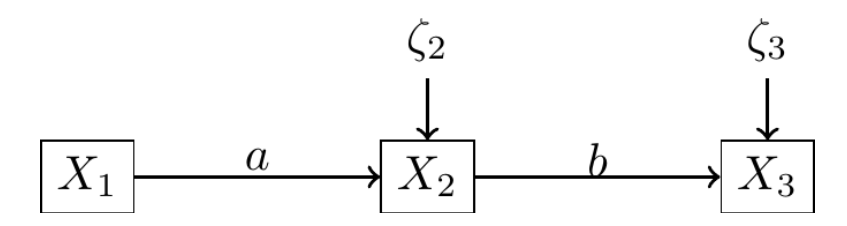
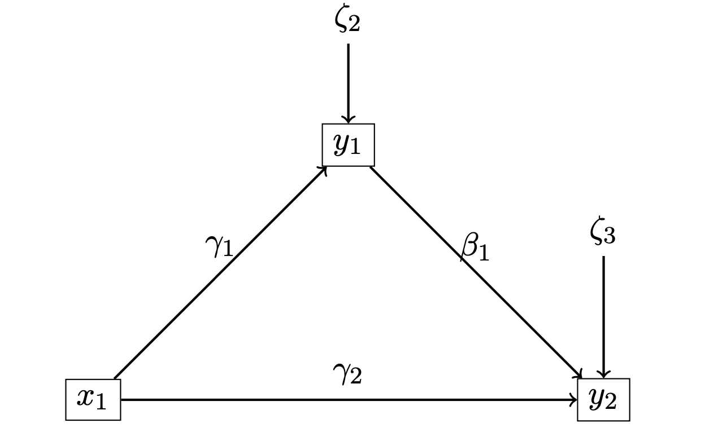

1 Covariance Analysis for Path model
The path analysis concerns observed variables only. In this case, the exogenous variables are denoted by \(x_\bullet\) and the endogenous variables are denoted by \(y_\bullet.\)
1.1 Limits of regression model
Regression models are popular for testing linear relationship between continous predictors and continous outcome.
However, in this framework :
- Predictors are measured without errors.
- For example, some systems of regression equations cannot be tested:

1.2 Assumptions
We assume that the errors \(\zeta_\bullet\) are not correlated.
Moreover, by definition of exogenous variables,
the errors \(\zeta_\bullet\) and the exogenous variables \(x_\bullet\) of the model are not correlated.
For simplification, we assume that endogenous and exogenous variables are standardized, that is
\[\mathbb{E}(x_\bullet)=\mathbb{E}(y_\bullet)=0, \quad \mathbb{V}(x_\bullet)=\mathbb{V}(y_\bullet)=1.\]
1.2.1 Remark :
This assumption is not necessary in the applications; it only serves to simplify the mathematical expression of the covariance matrix.
1.3 Diagram of a path

A path model can be summarized by a diagram. In the left, the diagram describes a mediation model with an exogenous variable \(x_1\), a mediator \(y_1\) and an outcome \(y_2\).
This diagram represents the following system
\[ \begin{cases} y_1=\gamma_1 x_1 +\zeta_1 \\ y_2=\beta_1 y_1 + \gamma_2x_1 +\zeta_2 \end{cases} \]
1.4 Parameters of the model
In path modelling, we assume that the \(\zeta_\bullet\) errors are centered (ie zero mean) and we denote their variances by \(\sigma^2_\bullet.\)
Let \(\theta=(\gamma_1,\beta_1,\gamma_2,\sigma_1,\sigma_2)\) the vector of parameters.
We can write the correlation matrix of the model \[ \Sigma(\theta)=\left( \begin{array}{ccc} 1 & \gamma1 & \gamma_1\beta_1+\gamma_2 \\ & \gamma_1^2+\sigma_1^2 & \beta_1+\gamma_1\gamma_2 \\ & & \gamma_2^2+\beta_1^2+\beta_1\gamma_1\gamma_2+\sigma_2^2 \end{array} \right) \]
1.5 Covariance analysis
We denote by \(S\) the empirical correlation matrix. We look for the parameter \(\theta\) such as
\[ \Sigma(\theta) \simeq S \] For Ordinary Least Square minimization, the cost function is
\[F_{ULS}=\frac1{2}\Vert \Sigma-S\Vert^2=trace[(\Sigma-S)^T.(\Sigma-S)].\]
Numerical algoritm can be performed to estimate the solution of this problem.
1.6 General problem of identification
\(q\) exogenous variables \(x_1,...,x_q\)
\(p\) endogenous variables \(y_1,...,y_p\).
\(\theta\) vector of \(t\) parameters to be estimated.
We must have:
\[ t\leq\frac{(p+q)(p+q+1)}{2} \]
1.7 Jöreskog formula
This formula provided an explicit form of the covariance matrix \(\Sigma(\theta)\) from the parameters \(\theta\) of the Path-model.
1.8 Maximum likelihood estimation
\((x_1,...,x_p,y_1,...,y_q)^T \sim \mathcal N (0,\Sigma)\), where \(\Sigma\) is the covariance matrix of the variable \(\bf{x,y}\).
\(\Sigma\) and \(S\) are positive-definite.
We define the log-likelihood function of the path model
\[F_{ML}(\theta)=\log|\Sigma|+trace(S\Sigma^{-1})-\log|S|-(p+q).\]
1.9 Properties
1.10 The cost function \(F_{ML}\)
\(F_{ML}(S,\Sigma(\theta))\geq 0,\)
\(F_{ML}(S,\Sigma(\theta))= 0\) if and only if \(S= \Sigma(\theta)),\)
\(F_{ML}\) is continuous in \(S\) as well as in \(Sigma(\theta).\)
1.11 The ML-estimator
The maximum of the function \(F_{ML}\) has no explicit expression, but it can be numerically estimated (see Jöreskog (1966)).
Asymptotically, \(\widehat \theta_{ML}\) is unbiased, consistent, efficient (i.e. among the consistent estimators of \(\theta\) it has the smallest asymptotic variance).